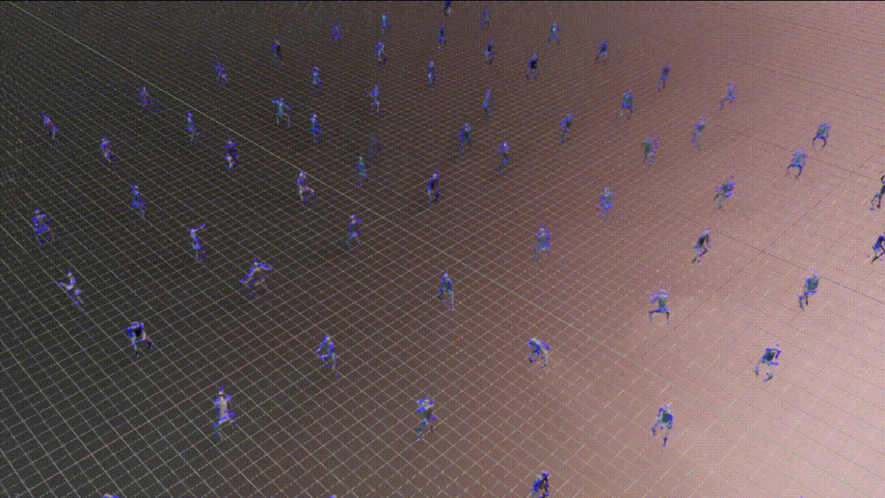
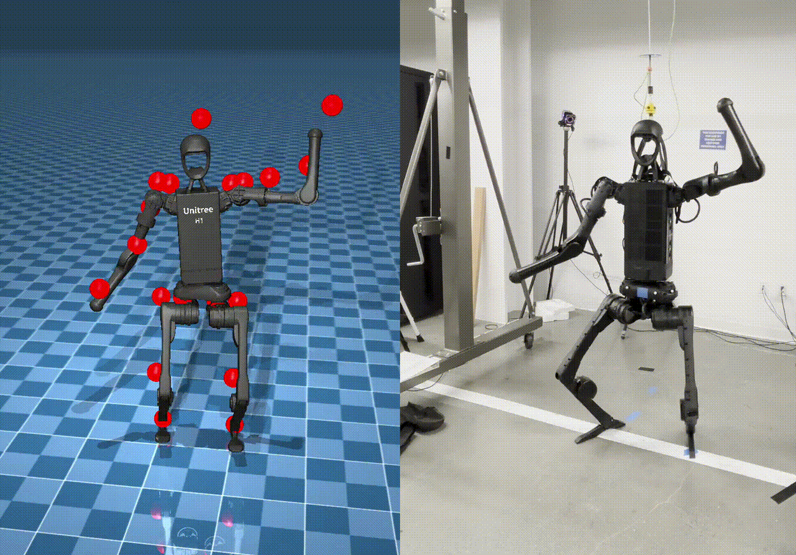

训练和部署 HOVER 策略#
本教程向您展示了如何在 Isaac Lab 仿真环境中训练和部署 HOVER 的示例，该示例是用于人形机器人的全身控制（WBC）策略。它使用了提供了训练人形机器人全身神经控制策略的 Isaac Lab 扩展的 HOVER 仓库，如 HOVER 论文 和 OMNIH2O 论文 中所述。有关视频演示和项目的更多详细信息，请访问 HOVER 项目网站 和 OMNIH2O 项目网站 。

安装#
备注
本教程仅适用于 Linux。
HOVER 支持 Isaac Lab 2.0 和 Isaac Sim 4.5。请确保已安装正确的 Isaac Lab 和 Isaac Sim 版本以运行 HOVER 工作流程。
按照 Isaac Lab 安装指南 中的说明安装 Isaac Lab。
定义以下环境变量以指定您的 Isaac Lab 安装路径:
# Set the ISAACLAB_PATH environment variable to point to your Isaac Lab installation directory
export ISAACLAB_PATH=<your_isaac_lab_path>
在您的工作空间中克隆 HOVER 仓库及其子模块。
git clone --recurse-submodules https://github.com/NVlabs/HOVER.git
安装依赖项。
cd HOVER
./install_deps.sh
训练策略#
数据集#
参考 HOVER 数据集 仓库，了解获取和处理数据以训练策略的步骤。
训练教师策略#
从 HOVER 目录执行以下命令以训练教师策略。
${ISAACLAB_PATH:?}/isaaclab.sh -p scripts/rsl_rl/train_teacher_policy.py \
--num_envs 1024 \
--reference_motion_path neural_wbc/data/data/motions/stable_punch.pkl \
--headless
教师策略将进行 10000000 次迭代，或直到用户中断训练。生成的检查点存储在 neural_wbc/data/data/policy/h1:teacher/ 中，文件名为 model_<iteration_number>.pt 。
训练学生策略#
从 HOVER 目录执行以下命令以使用教师策略检查点训练学生策略。
${ISAACLAB_PATH:?}/isaaclab.sh -p scripts/rsl_rl/train_student_policy.py \
--num_envs 1024 \
--reference_motion_path neural_wbc/data/data/motions/stable_punch.pkl \
--teacher_policy.resume_path neural_wbc/data/data/policy/h1:teacher \
--teacher_policy.checkpoint model_<iteration_number>.pt \
--headless
这假定您已经训练了教师策略，因为仓库中未提供教师策略。
测试已训练好的策略#
运行教师策略#
从 HOVER 目录执行以下命令以播放训练好的教师策略检查点。
${ISAACLAB_PATH:?}/isaaclab.sh -p scripts/rsl_rl/play.py \
--num_envs 10 \
--reference_motion_path neural_wbc/data/data/motions/stable_punch.pkl \
--teacher_policy.resume_path neural_wbc/data/data/policy/h1:teacher \
--teacher_policy.checkpoint model_<iteration_number>.pt
播放学生策略#
从 HOVER 目录执行以下命令以播放训练好的学生策略检查点。
${ISAACLAB_PATH:?}/isaaclab.sh -p scripts/rsl_rl/play.py \
--num_envs 10 \
--reference_motion_path neural_wbc/data/data/motions/stable_punch.pkl \
--student_player \
--student_path neural_wbc/data/data/policy/h1:student \
--student_checkpoint model_<iteration_number>.pt
评估已训练的策略#
在 Isaac Lab 环境中评估已训练的策略检查点。评估将遍历数据集中通过 --reference_motion_path 选项指定的所有参考动作，并在评估完所有动作后退出。评估期间关闭随机化。
有关评估管道和使用的指标的更多详细信息，请参考 HOVER 评估 仓库。
评估脚本 scripts/rsl_rl/eval.py 使用与播放脚本 scripts/rsl_rl/play.py 相同的参数。您可以将其用于教师和学生策略。
${ISAACLAB_PATH}/isaaclab.sh -p scripts/rsl_rl/eval.py \
--num_envs 10 \
--teacher_policy.resume_path neural_wbc/data/data/policy/h1:teacher \
--teacher_policy.checkpoint model_<iteration_number>.pt
策略的验证#
在另一个仿真环境或真实机器人上验证 Isaac Lab 中训练的策略。
{kind=link}

Stable Wave - Mujoco（左）和 Real Robot（右）#
Sim-to-Sim 验证#
使用提供的 Mujoco 环境 进行已训练策略的 Sim-to-Sim 验证。要运行 Sim2Sim 评估，
${ISAACLAB_PATH:?}/isaaclab.sh -p neural_wbc/inference_env/scripts/eval.py \
--num_envs 1 \
--headless \
--student_path neural_wbc/data/data/policy/h1:student/ \
--student_checkpoint model_<iteration_number>.pt
请注意，mujoco_wrapper 仅支持一次运行一个环境。作为参考，对 8k 个参考动作进行评估将需要最多 5 小时。推理环境被设计用于最大的多功能性。
Sim-to-Real 部署#
对于 sim-to-real 部署，我们为 Unitree H1 Robot 提供了一个 硬件环境 。有关设置 Sim-to-Real 部署工作流程的详细步骤，请查看 Sim2Real 部署的 README 。
要在 H1 机器人上部署训练过的策略，
${ISAACLAB_PATH:?}/isaaclab.sh -p neural_wbc/inference_env/scripts/s2r_player.py \
--student_path neural_wbc/data/data/policy/h1:student/ \
--student_checkpoint model_<iteration_number>.pt \
--reference_motion_path neural_wbc/data/data/motions/<motion_name>.pkl \
--robot unitree_h1 \
--max_iterations 5000 \
--num_envs 1 \
--headless
备注
Sim-to-Real 部署包装器当前仅支持 Unitree H1 机器人。可通过实现相应的硬件包装器接口对其进行扩展。